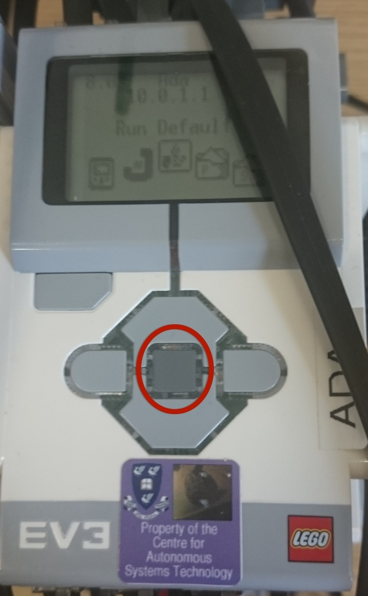

Using the Mars Rover Tablet App
1. Connecting
To connect the android device to the EV3 Robot is a two step process. First you need to pair the android device to the robot, then secondly connecting the Mars Rover app to the EV3 Robot.
Please ensure that WiFi and Mobile Data is switched off.
- 1.1 Bluetooth Pairing
- Turn on the EV3 Robot by pressing the center dark grey button.

- Wait for the EV3 Robot to finish starting up, the robot will make a noise when it is finished. (This may take a few moments)
- On your Android device go to the settings app.
- Turn on the bluetooth.
- Touch the name of the robot when it appears, and wait for it to finishing pairing.
- Touch the gear icon next to the robot name.
- Touch the internet access box so that it is ticked.
- The Android Device and the EV3 Robot are now paired.
- 1.2 Connecting from the Mars Rover App
- Ensure that the Android device is paired and that WiFi and Mobile Data are switched off.
- Start the Mars Rover App.
- Ensure that robot address is correct by looking on the EV3 Display for a number in this format 10.0.1.1.
- Press the connect button, connection messages are shown below. When connected it will display connected in the messages below.
2. Navigation
This page is to allow manual control of the EV3 Robot, you can also set the robot speed and the delay of the navigation buttons
- 2.1 Time Delay
- This is the amount of time it takes for the robot to receive the command from the navigation button pressed.
There are four settings that can be chosen:
- 1. Instant
- This is the setting for no delay to take place
- 2. Satellite Phone Call to Austrilia (500ms)
- This sets the delay to 500 milliseconds, which is about the same as the delay in a satellite phone call to Austrilia from the UK.
- 3. Radio Signal to the Moon (1.3secs)
- This sets the delay to 1.3 seconds, which is how long it takes a radio signal to get to the moon from earth.
- 4. Signal To Mars (3min)
- This sets the delay to 3 minutes, which is the minimum amount of time it takes for a signal to reach the actual Mars Rover.
- 2.2 Robot Speed
- This sets the speed of the robot for when it moves, the speed affects both the navigation buttons and the task demonstrations.
There are five speeds to choose from:
- 1. Slow
- 2. Normal
- 3. Fast
- 4. Faster
- 5. Fastest
- 2.3 Navigation Buttons
- There are a number of buttons that enable you to move the robot around. These include:
- Double Up Arrow
- The robot will move forward until stop is pressed.
- Up Arrow
- The robot will move forward slightly.
- Double Left Arrow
- The robot will turn left until stop is pressed.
- Left Arrow
- The robot will turn about 90° to the left.
- Stop
- Stops the robot moving
- Right Arrow
- The robot will turn about 90° to the right.
- Double Right Arrow
- The robot will turn right until the stop button is pressed.
- Down Arrow
- The robot will reverse slightly
- Double Down Arrow
- The robot will reverse until the stop button is pressed.
3. Rules
This page is where you can set how the lego rover should react when an obstacle either disappears or appears
Tasks
Settings